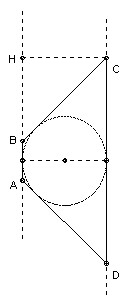

The planes P and Q are not parallel. The point A lies in P but not Q, and the point C lies in Q but not P. Construct points B in P and D in Q such that the quadrilateral ABCD satisfies the following conditions: (1) it lies in a plane, (2) the vertices are in the order A, B, C, D, (3) it is an isosceles trapezeoid with AB is parallel to CD (meaning that AD = BC, but AD is not parallel to BC unless it is a square), and (4) a circle can be inscribed in ABCD touching the sides.
Solution

Let the planes meet in the line L. Then AB and CD must be parallel to L. Let H be the foot of the perpendicular from C to AB. The fact that a circle can be inscribed implies AB + CD = BC + AD (equal tangents from A, B, C, D to the circle). Also CD = AB ± 2BH. This leads to AH = AD = BC.
The construction is now easy. First construct the point H. Then using the circle center C radius AH, construct B. Using the circle center A radius AH construct D.
Note that if CH > AH then no construction is possible. If CH < AH, then there are two solutions, one with AB > CD, the other with AB < CD. If CH = AH, then there is a single solution, which is a square.

Solutions are also available in: Samuel L Greitzer, International Mathematical Olympiads 1959-1977, MAA 1978, and in István Reiman, International Mathematical Olympiad 1959-1999, ISBN 189-8855-48-X.
1st IMO 1959 home
© John Scholes
jscholes@kalva.demon.co.uk
19 Sep 2001
Last updated/corrected 26 Jan 2004